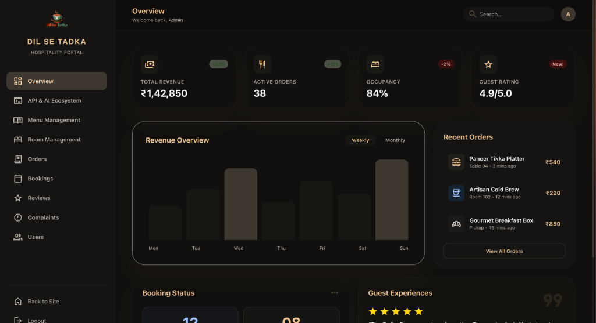
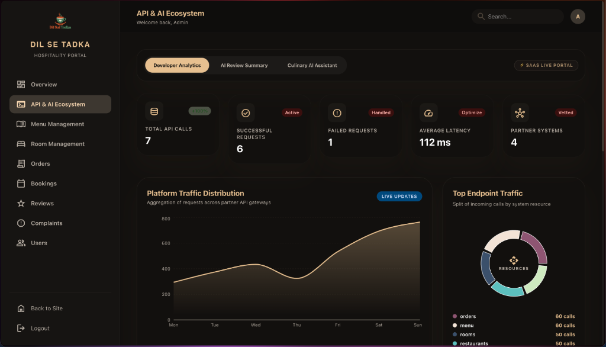
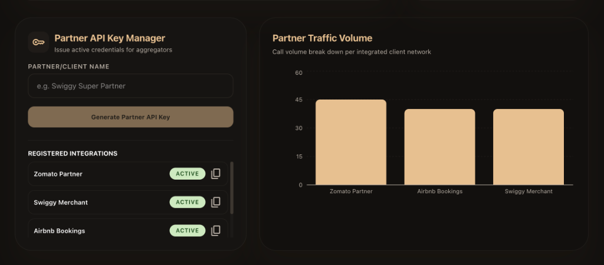

Figure 3.3: AI Review Summary panel demonstrating satisfaction rating, generative summaries, extracted strengths/complaints, and operational recommendations.
Dil Sai Tadka is a lodgings and restaurant management platform. The application provides two main management panels:
The Overview Dashboard provides an immediate summary of hotel and restaurant metrics for management staff.

The React frontend component AdminDashboard.jsx fetches these details on mounting. It calls /api/dashboard/stats to load the metric counters, /api/dashboard/revenue to render the bar chart, and /api/dashboard/recent-orders to display the recent items table.
The API & AI Ecosystem Dashboard coordinates developer-level partner APIs and displays AI insights. It is structured into three sub-tabs:
This tab monitors external integration gateways (e.g. Swiggy, Zomato, and Airbnb) and traces operational statistics.

Figure 3.1 demonstrates real-time developer statistics:
Scroll down on the Developer Analytics tab to view partner credentials management and aggregator call volume charts.

Zomato Partner) and generate secure API keys to integrate external platforms. It includes active indicators and copy-to-clipboard utilities.This sub-tab visualizes reviews analyzed by the Groq Llama 3 LLM.
An interactive chatbot interface utilizing Groq chat completions to assist users with recipe recommendations.

The chatbot loads all active menu items and pricing from the database, injecting them into the system prompt context. Users can ask for vegetarian recommendations, stays dining combos, and pairings. The chatbot replies in plain text with customized suggestions.
This section outlines the backend code driving the dashboards and API gateways.
Exposes general lodging statistics, recent bookings, recent orders, and computes monthly revenue aggregates.
@RestController @RequestMapping("/api/dashboard") @RequiredArgsConstructor public class DashboardController { private final OrderRepository orderRepository; private final BookingRepository bookingRepository; private final MenuItemRepository menuItemRepository; private final RoomRepository roomRepository; private final UserRepository userRepository; private final ReviewRepository reviewRepository; @GetMapping("/stats") public Map<String, Object> getStats() { return Map.of( "totalOrders", orderRepository.count(), "totalBookings", bookingRepository.count(), "totalMenuItems", menuItemRepository.count(), "totalRooms", roomRepository.count(), "totalUsers", userRepository.count(), "totalReviews", reviewRepository.count() ); } @GetMapping("/revenue") public Map<String, Object> getRevenue() { List<Order> orders = orderRepository.findAll(); Map<YearMonth, Double> revenueMap = new HashMap<>(); for (Order o : orders) { if (o.getCreatedAt() != null && o.getTotalAmount() != null) { YearMonth ym = YearMonth.from(o.getCreatedAt()); revenueMap.merge(ym, o.getTotalAmount(), Double::sum); } } Map<String, Double> formatted = revenueMap.entrySet().stream() .collect(Collectors.toMap( e -> e.getKey().toString(), Map.Entry::getValue)); return Map.of("monthlyRevenue", formatted); } }
Calculates success/failure metrics directly on the database to improve speed.
@Repository public interface ApiUsageLogRepository extends JpaRepository<ApiUsageLog, Long> { List<ApiUsageLog> findAllByOrderByTimestampDesc(); // Count successful requests (status code 2xx) @Query("SELECT COUNT(l) FROM ApiUsageLog l WHERE l.statusCode >= 200 AND l.statusCode < 300") long countSuccessfulRequests(); // Count failure requests (status code 4xx/5xx) @Query("SELECT COUNT(l) FROM ApiUsageLog l WHERE l.statusCode >= 400") long countFailedRequests(); // Average request latency @Query("SELECT AVG(l.responseTimeMs) FROM ApiUsageLog l") Double getAverageResponseTime(); }
Validates aggregator keys in incoming headers and enforces rate limits under 60 requests per minute.
@Component @RequiredArgsConstructor @Order(1) public class PartnerAuthFilter extends OncePerRequestFilter { private final PartnerIntegrationRepository partnerRepo; private final Map<String, AtomicLong> rateLimiter = new ConcurrentHashMap<>(); @Override protected void doFilterInternal(HttpServletRequest req, HttpServletResponse res, FilterChain chain) { String apiKey = req.getHeader("X-Partner-Key"); if (apiKey == null) { res.setStatus(401); return; } PartnerIntegration partner = partnerRepo.findByApiKey(apiKey).orElse(null); if (partner == null || partner.getStatus() != Status.ACTIVE) { res.setStatus(401); return; } long currentMinute = System.currentTimeMillis() / 60000; String limitKey = partner.getName() + ":" + currentMinute; rateLimiter.putIfAbsent(limitKey, new AtomicLong(0)); if (rateLimiter.get(limitKey).incrementAndGet() > 60) { res.setStatus(429); return; } chain.doFilter(req, res); } }